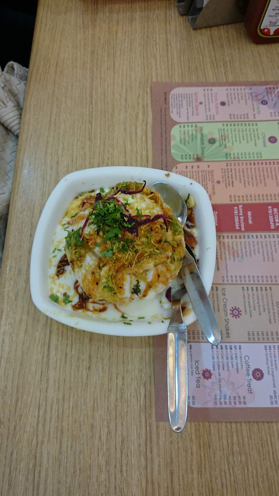

Contains: milk, gluten
Ingredients
Quantities for 4.
- 200g Maidafor the papdi
- 1 tsp Ajwain
- 300g, boiled and cubed small Potato
- 200g, cooked Chickpeas
- 400g, whisked smooth and chilled Yogurt
- 5 tbsp thick sweet extract Tamarind
- a large handful Mintfor the green chutney
- a large handful Coriander Leaves
- 2 Green Chilli
- 2 tsp Chaat Masala
- 1 tsp Black Salt
- 1 tsp, roasted Cumin Powder
- 1 tsp Chilli Powder
- 60g Besanfor the sevoptional
- 500ml Neutral Oilfor deep frying
- to taste Salt
Cookware
stovetop, kadhai
Checked against the ingredient list for ten allergens: milk, egg, fish, crustaceans, tree nuts, peanuts, sesame, mustard, soy and gluten. Brands vary, so read the label on anything new to you.
Before you start
- Everything is assembled at the table, in this order: papdi, then potato and chana, then yogurt, then chutneys, then spice, then sev.
- The yogurt must be cold and the papdi crisp. Warm yogurt on warm papdi is a paste.
Method
- Make a stiff dough from maida, ajwain, 2 tbsp oil and cold water. Rest 20 minutes.
- Roll thin, cut 4cm discs, prick each all over with a fork, and fry at 160C until hard and pale, 4 minutes.Pricking stops them puffing into puris.
- Blend the mint, coriander, green chilli, a little salt and lemon into a thick green chutney.
- Whisk the yogurt with a pinch of salt and sugar until pourable, and chill it.
- Arrange the papdi on a plate, scatter over the potato and chickpeas.
- Spoon the cold yogurt over, then the tamarind chutney and the green chutney.
- Dust with chaat masala, black salt, roasted cumin and chilli powder, and finish with sev.Serve the second it is assembled. Papdi goes soft in about ninety seconds.
Storage
The papdi keep two weeks in an airtight tin and the chutneys a week refrigerated. Assembled chaat cannot be kept at all.
Nutrition Medium estimate
High protein: 25 g a serving, 13% of the calories
| Per serving334 g | Per 100 g | |
|---|---|---|
| Calories | 759 kcal | 228 kcal |
| Protein | 24.9 g | 7 g |
| Carbohydrate | 110.2 g | 33 g |
| of which sugars | 19.9 g | 6 g |
| Fibre | 12.9 g | 4 g |
| Fat | 25.8 g | 8 g |
| of which saturated | 4.5 g | 1 g |
| of which unsaturated | 19.1 g | 6 g |
Ingredients given to taste count as zero, so the real figures run a little higher. Nearest database match used for black salt, chaat masala. Estimated from raw ingredients using USDA FoodData Central.
More like this: Vegetarian Indian recipes · No onion no garlic recipes · Punjabi recipes
Times, yields, allergens and nutrition are guidance. Use your own judgement on doneness and on storing. More in About.